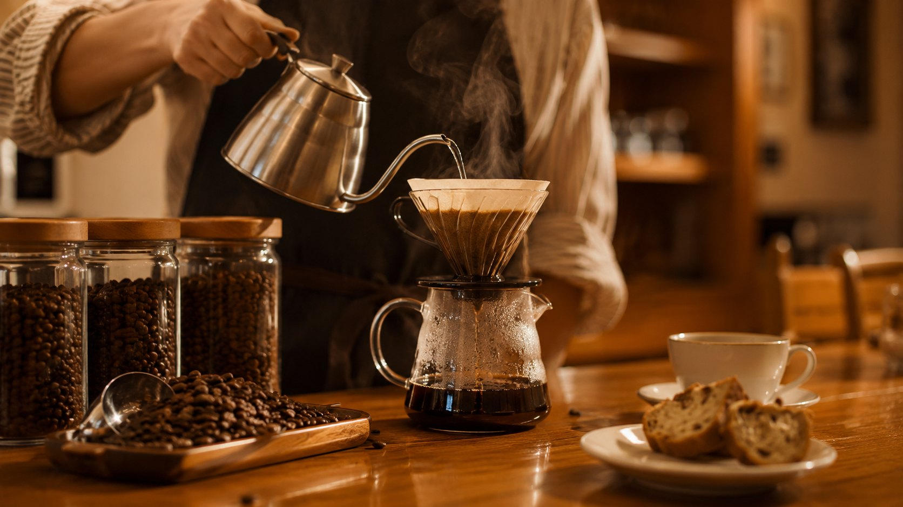
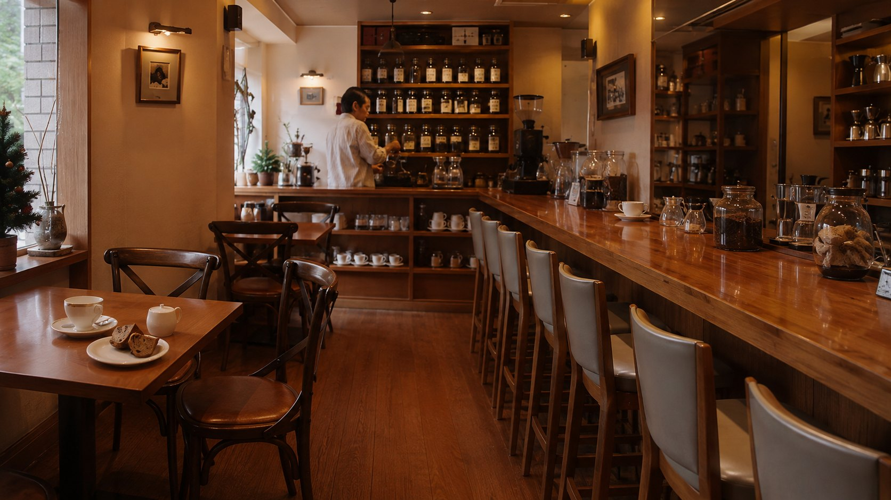
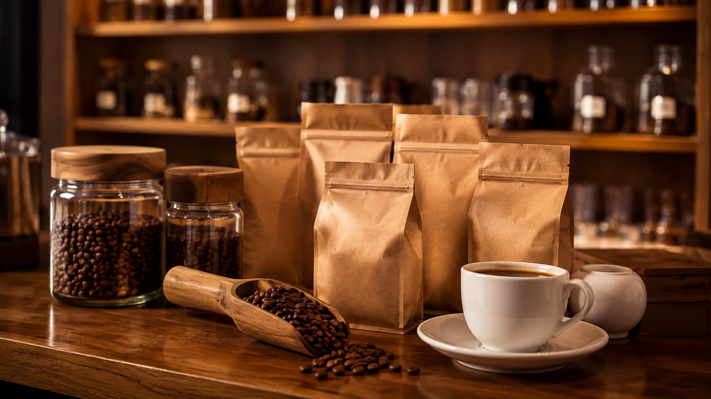
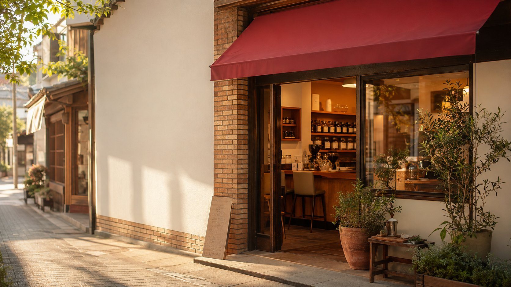
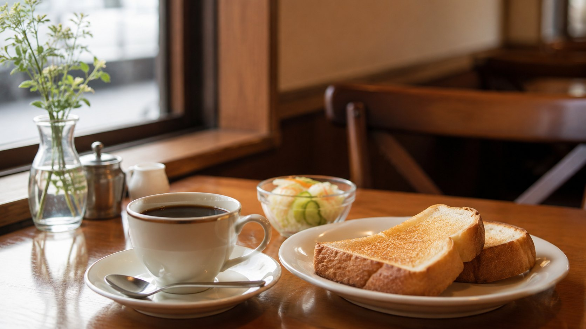

01

浅煎りから深煎り、カフェインレスまでの自家焙煎
世界各地の豆を店内で自家焙煎し、浅煎りから深煎り、カフェインレスまで幅広く提供しています。
お客様にとっての価値：好みの濃さや体調に合わせて、焙煎度を選びながらコーヒーを楽しめます。
世界各地の豆を店内で自家焙煎する杉本珈琲店。浅煎りから深煎り、カフェインレスまで幅広く扱い、店内飲食・豆販売・オンライン通販で楽しめます。

「珈琲には、甘味を伴った苦味や酸味、フルーツ感のある風味、コクのある風味など複雑な味わいがあります。差し支えなければ、まずはブラックで珈琲本来の風味を味わっていただければ幸いです。」
公式サイトに掲載されている店主のメッセージより要約しています。
01

世界各地の豆を店内で自家焙煎し、浅煎りから深煎り、カフェインレスまで幅広く提供しています。
お客様にとっての価値：好みの濃さや体調に合わせて、焙煎度を選びながらコーヒーを楽しめます。
02

店内飲食・コーヒー豆の店頭販売・オンライン通販のすべてに対応しています。
お客様にとっての価値：来店できない日でも、通販でいつもの味を自宅に届けてもらえます。
03

店主は全国の商店街を仕事で巡る中で秋田市の通町商店街を気に入り、この地で店を構えました。
お客様にとっての価値：地域に根ざした商店街の中で、落ち着いて一杯を味わう時間を過ごせます。
店主の杉本英明氏は、大手コーヒーメーカーに24年間勤務していました。
仕事で全国の商店街を巡る中、秋田市の通町商店街を気に入ったことが、開業のきっかけになりました。
退職後の2009年7月、この地で杉本珈琲店を開業しました。
長年培った経験は、世界各地の豆を扱う自家焙煎へとつながっています。
「珈琲本来の風味を味わってほしい」という想いを込めて、一杯ずつ丁寧に提供しています。
※ この節は秋田経済新聞「秋田・バリアフリーのコーヒーショップ、地元住民の『憩いの場』に」（2009年10月19日）の記事にもとづいています。
開店以来提供しているオリジナルブレンドで、中煎りのバランスが取れた味わいです。好みや気分に合わせて選べる自家焙煎コーヒーの入り口として、まず試していただきたい一杯です。
価格・ご提供方法は最新の公式情報をご確認ください。

トーストと千秋ブレンドのモーニングセットで、一日を落ち着いてスタートできます。
好みや気分に合わせて選べる自家焙煎コーヒーを、店内でゆっくり味わえます。
焙煎したての豆は店頭でもオンラインでも購入でき、自宅でも同じ味を楽しめます。
好みから合う豆をすぐ探せる診断と、マメルというキャラクターと一緒に味の違いを楽しく学べる診断の、2種類を用意した提案です。下のボタンから試作デモをお試しいただけます。
好みを整理しながら、焙煎度やカフェインの有無から自分に合う一杯を見つけやすくなります。
店頭での声かけや、通販ページでの商品選びのきっかけとして活用できる可能性があります。
あなたに合う一杯を、診断で見つけてみませんか？
好みや飲み方について答えるだけで、 おすすめのコーヒータイプを確認できます。
コーヒー豆診断を試す※試作デモが別画面で開きます。入力内容は保存・送信されません。
営業時間・定休日など最新情報は、店舗の公式サイトをご確認ください。